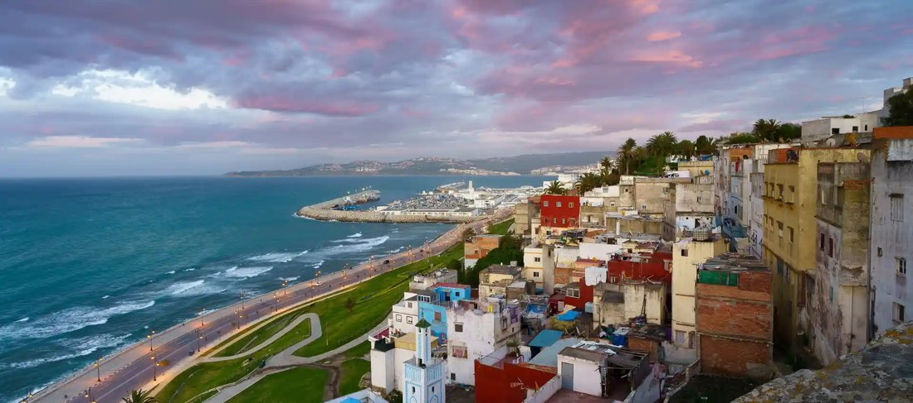

AfrikaGüncelTunus Turu
Tunus, Hammamet, Kayrevan, Susa, El Cem, Mehdiye, Manastır, Kartaca, Nabil
Güncel tarih ve fiyatiçin arayın
İncele →
Şehir etiketine dokunun; programın o günü açılsın.
Aşağıdaki fiyatlar önceki dönem içindir. Güncel fiyat, tarih ve kontenjan için bizi arayın.
| Tek Kişilik Odada Kişi Başı | $2.677,50 |
|---|---|
| İki Kişilik Odada Kişi Başı | ₺2.047,50 |
| Üç Kişilik Odada Kişi Başı | ₺2.047,50 |
| 0 - 2 Yaş | $315 |
|---|---|
| 2 - 6 Yaş | ₺1.627,50 |
| 6 - 12 Yaş | ₺1.995,50 |
* 12 yaş dahil değildir.
* 0 - 6 yaş çocuk fiyatları yataksızdır.
İstanbul Kahire
İstanbul Yeni Havalimanı Dış Hatlar Terminali Giden Yolcu Salonu THY bankosunda 03.55’te buluşuyoruz. Check-in ve pasaport işlemlerini müteakip THY’nin TK690 sefer sayılı 06.55 uçuşu ile Kahire’ye uçuyoruz. Varış: 09.15. Varışımızın ardından yapacağımız Kahire turumuzda Selahaddin Eyyübi Kalesi, klasik Osmanlı mimarisi tarzında inşa edilmiş Kavalalı Mehmet Ali Paşa Camisi, Memlük eserlerinden Sultan Hasan Medresesi, Rufai Camisi, Tolunoğlu Ahmet Camisi, İmamı Şafii’nin Kabri, Mısır fatihi sahabe Amr bin As Camisi ziyaretlerinin ardından akşam yemeği sonrası konaklama otelimizde. 5* Sonesta Hotel, 5* Ramses Hilton Hotel vb.
Kahire
Otelde alacağımız kahvaltının ardından Kahire turumuzda dünyanın 7 harikasından biri olan Giza Piramitleri: Keops Piramidi, Kefren Piramidi ve Mikerinos Piramidi, Sfenks, Papirüs Atölyesi, bulundurduğu eserler bakımından dünyanın en ünlü ve en zengin müzelerinden biri olan ayrıca 5000 yıllık tarihe tanıklık eden Mısır Müzesi, Tahrir Meydanı (uzaktan), Kahire Kulesi (uzaktan), Nil Nehri üzerindeki Ruda ve Gezira Adaları (uzaktan), El Ezher Camisi ve Hz. Hüseyin’in (Rh.A.) mübarek başlarının bulunduğu kabri ve Hz. Hüseyin Camisi’nin görülmesini müteakip Han Halil Çarşısı’nda serbest zamanın ardından akşam yemeği sonrası konaklama otelimizde.
Kahire Aswan Nil Nehri Cruise
Otelden erken çıkışımızın ardından Kahire Havalimanı’na hareket ediyoruz. Yerel havayolu ile Aswan’a uçuyoruz. Varışımızın ardından Aswan gezimizde tekne ile ulaşacağımız Philia Tapınağı gezisi sonrası cruise gemisi'ne transfer, kabinlere yerleşmeye müteakip Elephantine Adası, Aswan Barajı (Panoramik olarak) gezisi sonrası akşam yemeği ve konaklama cruise gemisinde. 5* Farida Cruise, 5*Alyssa Cruise vb.
Aswan Nil Nehri Kom Ombo Edfu
Cruise gemisinde alacağımız kahvaltının ardından Kom Ombo’ya hareket ediyoruz. Kom Ombo Tapınağı gezisi sonrası Edfu’ya hareket ediyoruz. Öğle yemeğini müteakip Edfu Tapınağı gezisi sonrası akşam yemeği ve konaklama cruise gemisinde.
Nil Nehri Cruise Edfu Luxor
Cruise gemisinde alacağımız kahvaltının ardından Krallar Vadisi Tapınakları, Kraliçe Hatshepsut Tapınağı, Dev Memnon Heykelleri gezisini müteakip gemiye dönüyoruz. Öğle yemeği sonrası Karnak ve Luxor Tapınakları ve çarşı gezisini müteakip akşam yemeği ve konaklama cruise gemisinde.
Luxor Hurgada
Ekstra Tur: Balon Turu (100USD)Cruise gemisinde alacağımız erken kahvaltı sonrası gemiden ayrılarak Hurgada’ya hareket ediyoruz (300 km). Varışta otelimize yerleşiyoruz. Dileyen misafirlerimiz Kızıldeniz’de denize girebilir, dileyenler tesisin diğer imkanlarından yararlanabilirler. Akşam yemeği ve konaklama otelimizde. 5* Marriot Hotel vb.
Hurgada
Otelde alacağımız kahvaltının ardından Kızıldeniz’in rengarenk balıkları ve mercanlarını temaşa edeceğimiz Glass Boat tekne turunun ardından Hurgada şehir gezimizde Marina, El Mina Camisi ve Kızıldeniz’den çıkan rengarenk deniz canlılarının satıldığı Balık Pazarı göreceğimiz yerler arasındadır. Akşam yemeği sonrası konaklama otelimizde.
Hurgada İstanbul
Saat 01.30’da odalarımızı boşaltarak lobide buluşuyoruz. Otelimizden en geç 01.45'te ayrılarak dönüş yolculuğumuz için Hurgada Havalimanı’na hareket ediyoruz. Check-in ve pasaport işlemlerini müteakip THY'nin TK703 sefer sayılı 05.05 uçuşu ile İstanbul'a hareket ediyoruz. Varış: 09.05.

AfrikaGüncel AfrikaGüncel
AfrikaGüncel AfrikaGüncel
AfrikaGüncel